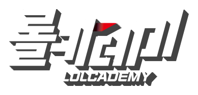
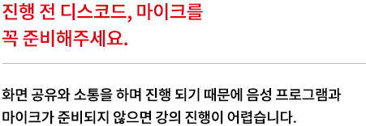
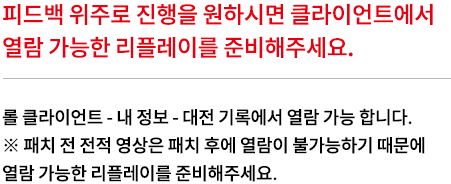

<div class="readyWrap">
  
  <p class="rW_title">강의를 위한 <span class="redBlock"><em>준비사항</em></span></p>
  <article class="rW_article flex_start">
    <div class="rW_dl">
      
    </div>
    <div class="rW_dl">
      
    </div>
    <!-- <dl class="rW_dl">
      <dt>진행 전 디스코드, 마이크를<br />
        꼭 준비해주세요.</dt>
      <dd>화면 공유와 소통을 하며 진행 되기 때문에 음성 프로그램과
        마이크가 준비되지 않으면 강의 진행이 어렵습니다.</dd>
    </dl> -->
    <!-- <dl class="rW_dl">
      <dt>피드백 위주로 진행을 원하시면 클라이언트에서
        열람 가능한 리플레이를 준비해주세요.</dt>
      <dd>롤 클라이언트 - 내 정보 - 대전 기록에서 열람 가능 합니다.<br />
        ※ 패치 전 전적 영상은 패치 후에 열람이 불가능하기 때문에
        열람 가능한 리플레이를 준비해주세요.
      </dd>
    </dl> -->
  </article>
</div>